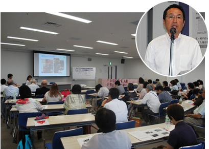
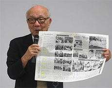

市民社会と連携し核兵器廃絶の世論を
7月16日(木)13時30分より、浦和コミュティセンター第15回集会室にて平和･市民5団体主催の｢NPT(核不拡散条約)再検討会議ニューヨーク行動報告のつどい｣を開催し、50人が参加しました。

はじめに、主催者を代表して岩岡埼玉県生協連会長理事が、｢最終文書は採択されませんでしたが、核兵器の非人道性に159ｹ国の賛同など核兵器廃絶が全体の潮流になっていると思います。本日の学習を通して、核兵器廃絶の取り組みを拡げてきましょう｣と挨拶しました。
■NPT(核不拡散条約)再検討会議ニューヨーク行動参加報告
◇吉村 和弘さん(埼玉県原爆被害者協議会) 最終文書を合意できなかったのは残念です。最初の証言活動は日本人学校で行い、感謝の言葉を頂きました。ヒロシマ・ナガサキの出来事の本を作りたいという小学4年生のルイス君と出会い、続いて共同集会・平和パレードへ参加。大学での証言活動での意見交換では、アメリカを憎んでいませんかと聞かれ、憎んだ時期もありましたが今は戦争を憎みこそすれ友好な隣人と思っていますと答えました。これからも被爆の実相を話していきます。
◇大久保 美紀さん(コープみらい) 日本被団協と日本生協連の代表団の一員として参加し被爆者の活動をサポート。共同集会と平和パレードが印象に残っています。学校訪問での証言活動や平和首長会議への参加、国連ロビーでの原爆展やオーストリア政府代表部への要請行動等を行いました。今年は被爆70年の節目の年、様々な場面で、一人ひとりができること、私たちにとって一番大切なものは何かなど、平和について考えあう時間を沢山持ちたいと思います。
◇林 政美さん(医療生協さいたま) 1日目は、2万歩パレード、書名や募金のお願いではカンパで作ったココロンバックでアピールしました。ハマーショールド広場でアンゲラ・ゲインさんに署名を渡した時は、署名の力を実感しました。2日目は、国連のロビーで活動、日本では見られない福島のパネルがありました。3日目自由行動でした。これから、見て聞いたことを自分の言葉にして、核廃絶の運動を広げていきます。
■講演：NPT(核不拡散条約)再検討会議の到達点や核兵器廃絶への展望について
◇田中 熙巳氏(日本原水爆被害者団体協議会事務局長)

学校やコミュニティで証言、各国代表に聞いてほしいと要請し10か国が応じてくれました。国連のロビーで原爆展を開催。今まで市民社会の声と被爆者の証言で核兵器を使用させませんでした。小学4年生のルイス君が阿部総理に送った手紙の一部を紹介しました。核兵器の廃絶は市民社会と一緒に進めていくことが国連の認識です。核保有国等の反対で最終文章は採択されませんでしたが、核兵器禁止条約の話は次につながり、国連総会でも話ができます。ある国の代表との話では｢国民が核兵器は要らないと言えば要らないと言わざるを得ない｣とのことでした。核保有国の市民に原爆被害を知ってもらい世論を変えるために訴えていくことが必要。原点に返りヒロシマ・ナガサキの出来事を学び伝えることが問われています。そして、市民が強くなり世界を動かしてください。